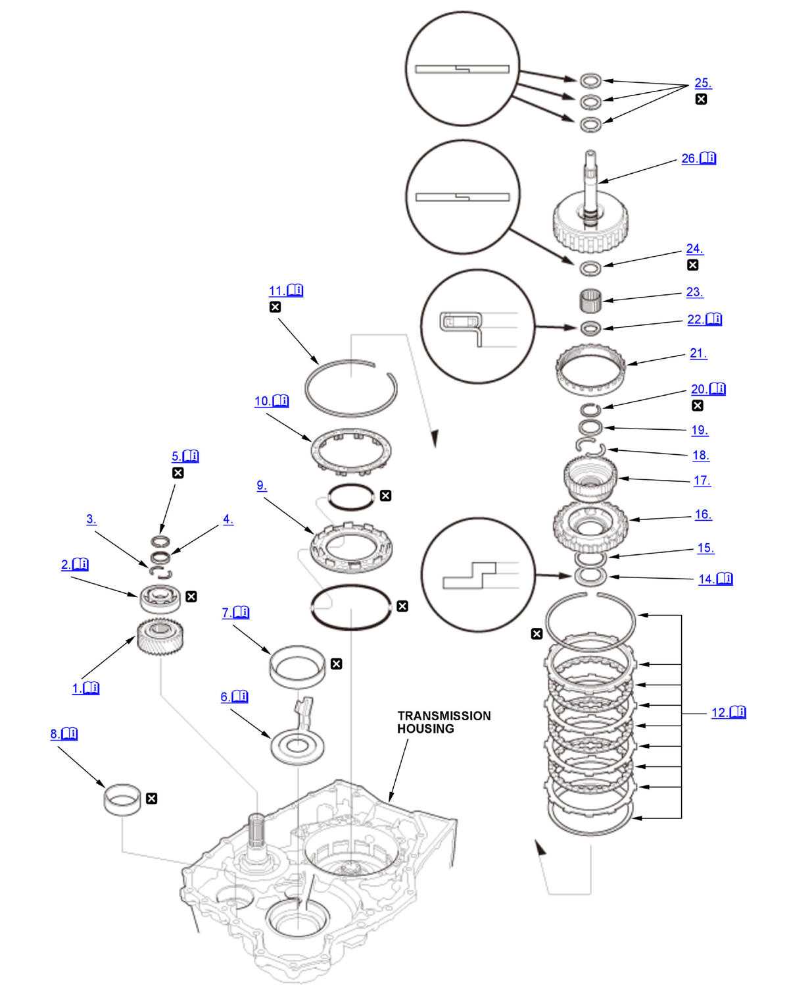
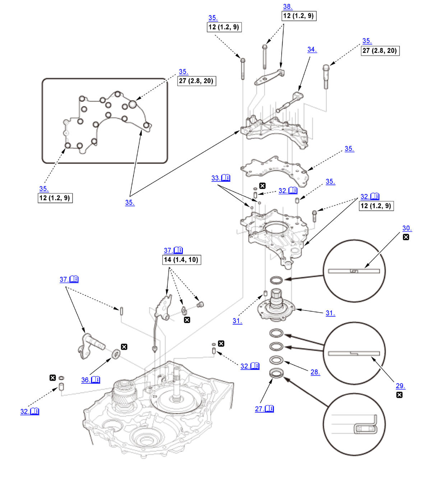
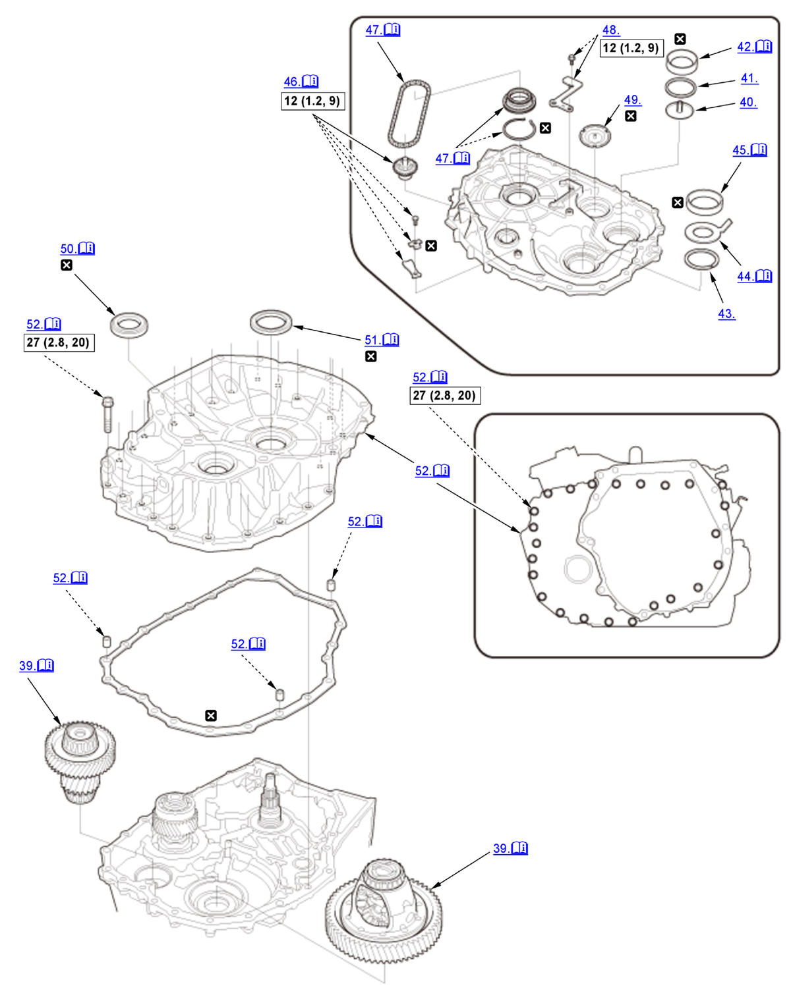
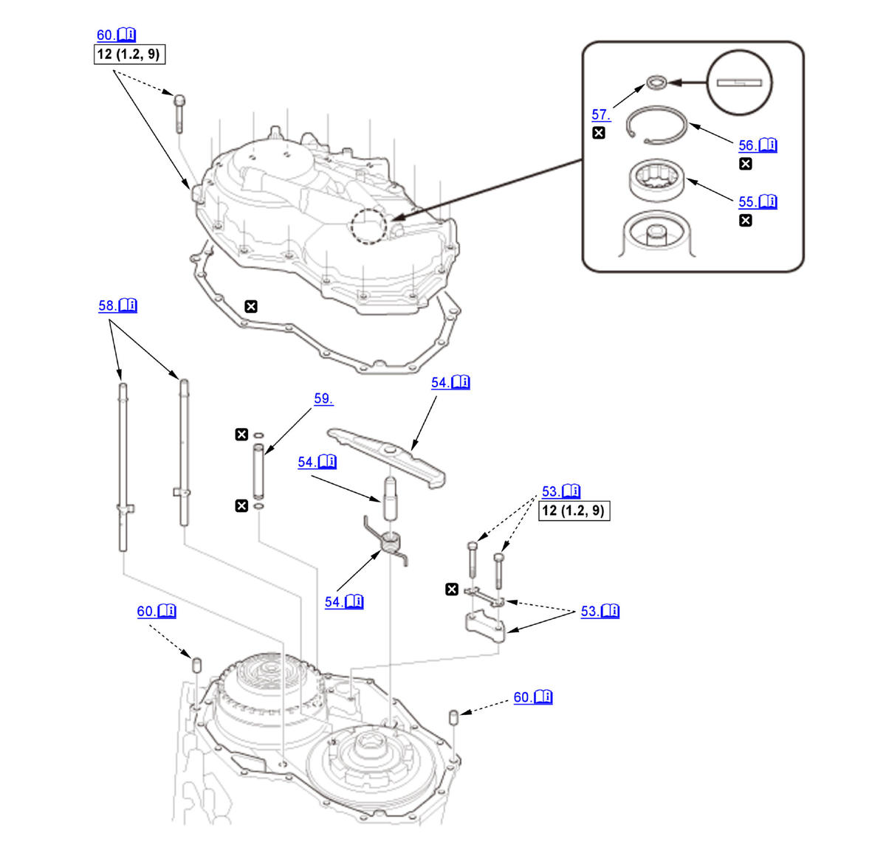
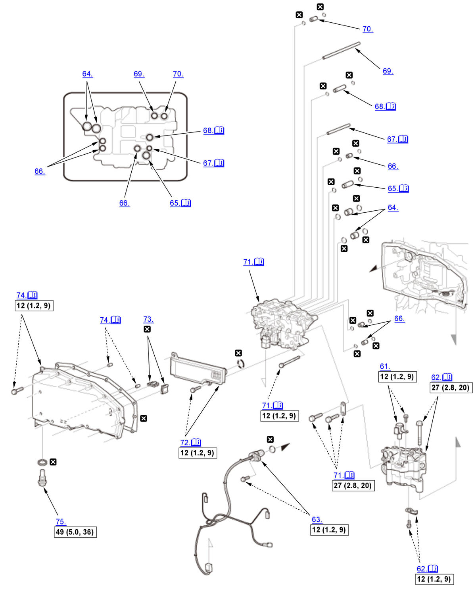
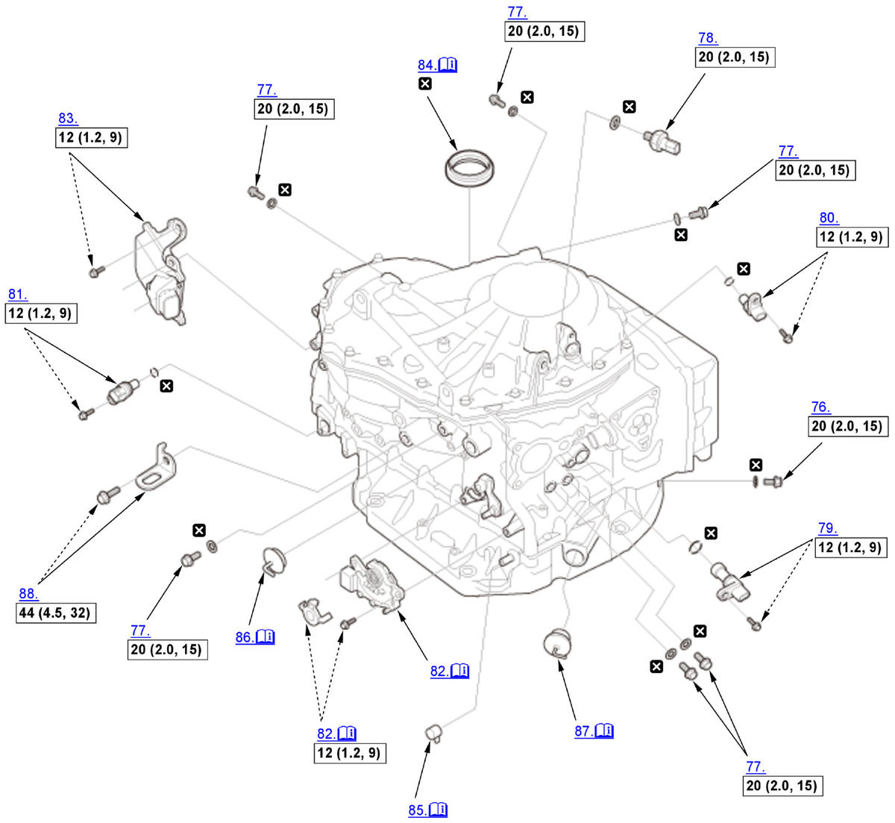

CVT Transmission Disassembly and Reassembly (L15B7/L15BA/L15BY (CVT)): Reassembly: Procedure
Numbered call-outs in figure pertain to list numbers in following procedure.

Courtesy of HONDA, U.S.A., INC. |
Detailed information, notes and precautions |
 |
Replace |
Numbered call-outs in figure pertain to list numbers in following procedure.

Courtesy of HONDA, U.S.A., INC. |
Detailed information, notes and precautions |
 |
Torque: N.m (kgf.m, lbf.ft) |
|
Replace |
Numbered call-outs in figure pertain to list numbers in following procedure.

Courtesy of HONDA, U.S.A., INC. |
Detailed information, notes and precautions |
|
Torque: N.m (kgf.m, lbf.ft) |
|
Replace |
Numbered call-outs in figure pertain to list numbers in following procedure.

Courtesy of HONDA, U.S.A., INC. |
Detailed information, notes and precautions |
|
Torque: N.m (kgf.m, lbf.ft) |
|
Replace |
Numbered call-outs in figure pertain to list numbers in following procedure.

Courtesy of HONDA, U.S.A., INC. |
Detailed information, notes and precautions |
|
Torque: N.m (kgf.m, lbf.ft) |
|
Replace |
Numbered call-outs in figure pertain to list numbers in following procedure.

Courtesy of HONDA, U.S.A., INC. |
Detailed information, notes and precautions |
|
Torque: N.m (kgf.m, lbf.ft) |
|
Replace |
- Secondary Drive Gear - Install
1. Install the secondary drive gear (A) until it bottoms in the direction shown using the 40 mm I.D. driver handle and the 30 mm I.D. bearing driver attachment. - Driven Pulley Shaft Bearing (Transmission Housing Side) - Install
1. Install the driven pulley shaft bearing (A) until it bottoms using the 40 mm I.D. driver handle and the 30 mm I.D. bearing driver attachment. - 25.5 mm Cotter - Install
- Cotter Retainer - Install
- Snap Ring - Install
1. Install the snap ring (A) using the snap ring pliers.
NOTE:- Be careful not to deform the snap ring by opening/closing it excessively.
- Make sure the snap ring is firmly installed in the groove.
- 41 x 92 x 1 mm Spacer - Install
1. Install the 41 x 92 x 1 mm spacer (A) by aligning the tab (B) with the groove (C). - Differential Carrier Tapered Roller Bearing Outer Race (Transmission Housing Side) - Install
1. Install the differential carrier tapered roller bearing outer race (A) using the 15 x 135L driver handle and the 78 x 90 mm attachment so there is no clearance between the bearing outer race, the 41 x 92 x 1 mm spacer, and the transmission housing. - Final Drive Shaft Tapered Roller Bearing Outer Race (Transmission Housing Side) - Install
1. Install the final drive shaft tapered roller bearing outer race (A) until it bottoms using the 15 x 135L driver handle and the 62 x 64 mm bearing driver attachment. - Reverse Brake Piston - Install
- Spring Retainer/Return Spring Assembly - Install
1. Install the spring retainer/return spring assembly (A) by aligning their holes (B) with the bosses (C). - Snap Ring - Install
1. Put the reverse brake spring compressor attachment (A) on the spring retainer/return spring assembly (B). NOTE: Be sure the attachment is set over the return springs, not on the reverse brake piston (C).
2. Install the reverse brake spring compressor plate (D) with facing the UP mark to the upside using bolts (E).
3. Make sure that the reverse brake spring compressor bolt (F) is properly installed on the dent in the surface of the reverse brake spring compressor attachment.
4. Compress the return springs using the reverse brake spring compressor until the snap ring securing the spring retainer/return spring can be installed.
5. Install the snap ring (G).
- Be careful not to deform the snap ring by opening/closing it excessively.
- Make sure the snap ring is firmly installed in the groove.
6. Remove the reverse brake spring compressor.
- Reverse Brake - Install
1. Install the disc spring (A). NOTE: Be sure to install the disc spring with the indented mark (B) facing the upward.
2. Starting with the reverse brake plate (C), alternately install the reverse brake plates and the reverse brake discs (D).
3. Install the reverse brake end-plate (E) with the flat side toward the top disc.
4. Install the snap ring (F).
- Be careful not to deform the snap ring by opening/closing it excessively.
- Make sure the snap ring is firmly installed in the groove.
- Reverse Brake Clearance - Adjust
1. Set a dial indicator (A) on the reverse brake end-plate (B).
2. Zero the dial indicator with the reverse brake end-plate lifted up to the snap ring (C) by lifting the top disk (D) up.
3. Release the top disk.
4. Put the fuel sender wrench on the reverse brake end-plate.
5. Press the fuel sender wrench down with 39.2 N (4.00 kgf, 8.81 lbf) (the weight of the fuel sender wrench is included) using a force gauge, and read the dial indicator.
The dial indicator reads the clearance (E) between the reverse brake end-plate and the top disc.
NOTE: Take measurements in at least three places, and use the average as the actual clearance.
Standard: 0.9-1.1 mm (0.035-0.043 in) 6. If the clearance is out of the standard, remove the reverse brake end-plate, and measure its thickness.
7. Select a new reverse brake end-plate.
Reverse Brake End-Plate
No. Thickness 2 4.6 mm (0.181 in) 3 4.7 mm (0.185 in) 4 4.8 mm (0.189 in) 5 4.9 mm (0.193 in) 6 5.0 mm (0.197 in) 7 5.1 mm (0.201 in) 8 5.2 mm (0.205 in) 9 5.3 mm (0.209 in) 10 5.4 mm (0.213 in) 11 5.5 mm (0.217 in) 12 5.6 mm (0.220 in) 13 5.7 mm (0.224 in) 14 5.8 mm (0.228 in) 15 5.9 mm (0.232 in) 16 6.0 mm (0.236 in) 17 6.1 mm (0.240 in) 18 6.2 mm (0.244 in) 8. Install a selected reverse brake end-plate, then recheck the clearance.
- 40 x 63 x 5.5 mm Washer - Install
NOTE: Make sure the 40 x 63 x 5.5 mm washer is installed in the correct direction.
- 50 x 65 x 3 mm Thrust Washer - Install
- Planetary Carrier Assembly - Install
- Sun Gear - Install
- 32.5 mm Cotter - Install
- Cotter Retainer - Install
- Snap Ring - Install
1. Install the snap ring (A) using the snap ring pliers.
NOTE:- Be careful not to deform the snap ring by opening/closing it excessively.
- Make sure the snap ring is firmly installed in the groove.
- Ring Gear - Install
- 24.5 x 39.1 x 3.2 mm Thrust Needle Bearing - Install
NOTE: Make sure the 24.5 x 39.1 x 3.2 mm thrust needle bearing is installed in the correct direction.
- 20 x 24 x 17 mm Needle Bearing - Install
- 24 mm Sealing Ring - Install
- 27 mm Sealing Ring - Install
- Input Shaft Assembly - Install
1. Install the input shaft assembly (A) by aligning the clutch discs (B) with the sun gear (C), and aligning the clutch guide (D) with the ring gear (E). 2. Measure the depth (A) between the surface of the transmission housing (B) and the clutch guide (C), then make sure the measured value of the depth is within the recorded value when removing. - 29.55 x 45 x 3.62 mm Thrust Needle Bearing - Install
NOTE: Make sure the 29.55 x 45 x 3.62 mm thrust needle bearing is installed in the correct direction.
- 32 x 42 mm Thrust Shim - Install
- 47 mm Sealing Ring - Install
- 40 mm Sealing Ring - Install
- Stator Shaft - Install
- Stator Shaft Flange - Install
NOTE: Align the hole (A) of the stator shaft flange with the dowel pin (B) of the stator shaft when installing the stator shaft flange.
- Check Ball - Install
NOTE:
- Be careful not to drop the check balls.
- Do not use a magnet to install the check balls, it may magnetize the check balls.
- Manual Valve - Install
- Manual Valve Body - Install
- Control Shaft Oil Seal - Install
1. Install the control shaft oil seal (A) to a depth (B) of 0.5-1.5 mm (0.020-0.059 in) below the transmission housing surface (C) using the 15 x 135L driver handle and the 22 x 24 mm attachment.
NOTE: Before installation, apply a light coat of clean transmission fluid to the surface both of the press-fit and the lip that are on the oil seal. - Control Shaft and Detent Lever - Install
1. Install the detent lever (A) by aligning the guide tab (B) of the detent lever with the opening (C) of the manual valve. 2. Insert the control shaft (D) into the transmission housing and the detent lever, then install the roller (E).
3. Secure the control shaft and the detent lever with the mounting bolt (F) and the lock washer (G).
4. Pry up the lock tab of the lock washer.
- Detent Spring - Install
- Differential Assembly and Final Drive Shaft Assembly - Install
NOTE: Make sure to assemble the final drive shaft and the final driven gear correctly (Combination A or B) as shown in the chart if either one of them or both are to be replaced. Correct combinations of the shaft and gear can be identified by the presence or the absence of the groove as shown in the chart.
- Oil Guide Plate - Install
- 80 mm Thrust Shim - Install
- Final Drive Shaft Tapered Roller Bearing Outer Race (Torque Converter Housing Side) - Install
1. Install the final drive shaft tapered roller bearing outer race (A) using the 15 x 135L driver handle and the 78 x 80 mm bearing driver attachment so there is no clearance between the bearing outer race, the 80 mm thrust shim, the oil guide plate, and the torque converter housing. - 76 mm Thrust Shim - Install
- 41 x 76.2 x 1 mm Spacer - Install
1. Install the 41 x 76.2 x 1 mm spacer (A) by aligning the tab (B) with the groove (C). - Differential Carrier Tapered Roller Bearing Outer Race (Torque Converter Housing Side) - Install
1. Install the differential carrier tapered roller bearing outer race (A) using the 15 x 135L driver handle and the 72 x 75 mm bearing driver attachment so there is no clearance between the bearing outer race, the 41 x 76.2 x 1 mm spacer, the 76 mm thrust shim, and the torque converter housing. - Transmission Fluid Pump Driven Sprocket - Install
1. Install the transmission fluid pump driven sprocket (A). 2. Install the bearing set plate (B) with the lock washer (C).
3. Pry up the lock tab of the lock washer.
- Transmission Fluid Pump Drive Sprocket and Transmission Fluid Pump Drive Chain - Install
1. Install the snap ring (A).
NOTE:
- Be careful not to deform the snap ring by opening/closing it excessively.
- Make sure the snap ring is firmly installed in the groove.
2. While expanding the snap ring using the snap ring pliers, install the transmission fluid pump drive sprocket (B) and the transmission fluid pump drive chain (C).
NOTE:
- Be careful not to deform the snap ring by opening/closing it excessively.
- Make sure the snap ring is firmly installed in the groove.
- Lubrication Plate - Install
- Oil Guide Plate - Install
- Right Differential Oil Seal - Install
1. Install the right differential oil seal (A) flush with the torque converter housing using the 65 mm oil seal driver.
NOTE: Before installation, apply a light coat of clean transmission fluid to the surface both of the press-fit and the lip that are on the oil seal. - Input Shaft Oil Seal - Install
1. Install the input shaft oil seal (A) flush with the torque converter housing using the 15 x 135L driver handle and the 78 x 90 mm attachment.
NOTE: Before installation, apply a light coat of clean transmission fluid to the surface both of the press-fit and the lip that are on the oil seal. - Torque Converter Housing - Install
NOTE:
- Tighten the torque converter housing mounting bolts in a crisscross pattern in at least two steps.
- Be careful not to drop the oil guide plate.
- Parking Brake Rod Holder - Install
1. Install the parking brake rod holder (A) with the lock washer (B). 2. Pry up the lock tabs of the lock washer.
- Parking Brake Pawl, Parking Shaft, and Parking Pawl Spring - Install
1. Install the parking brake pawl (A), the parking shaft (B), and the parking pawl spring (C) as shown. - Driven Pulley Shaft Bearing (End Cover Side) - Install
1. Install the driven pulley shaft bearing (A) until it bottoms using the 15 x 135L driver handle and the 70 mm attachment. - Snap Ring - Install
1. Install the snap ring (A) using commercially available snap ring pliers (B).
NOTE:- Be careful not to deform the snap ring by opening/closing it excessively.
- Make sure the snap ring is firmly installed in the groove.
- 22 mm Sealing Ring - Install
- Lubrication Pipe D and E - Install
1. Install lubrication pipes D and E as shown. - 12 x 89 mm Pipe - Install
- End Cover - Install
NOTE: Tighten the end cover mounting bolts in a crisscross pattern in at least two steps.
- Shift Solenoid Valve O/P - Install
- Transmission Fluid Pump - Install
NOTE: Align the guide pin (A) of the transmission fluid pump with the guide hole (B) of the stator shaft flange.
- Solenoid Wire Harness A - Install
- 18 x 18 mm Pipe - Install
- 14.3 x 36.2 mm Pipe - Install
NOTE: You can install the pipe regardless of its direction.
- 10.9 x 18.5 mm Pipe - Install
- Joint Pipe - Install
NOTE:
- The joint pipe has the filter (A). The filter end should face the valve body assembly side.
- Be careful not to drop the filter.
- 12 x 56.7 mm Pipe - Install
NOTE: You can install the pipe regardless of its direction.
- 8 x 133.5 mm Pipe - Install
- 10.9 x 26 mm Pipe - Install
- Valve Body Assembly - Install
1. Install the valve body assembly (A) straightly.
NOTE: Do not pinch solenoid wire harnesses A and B.2. Install the guide plate (G).
Bolt Length B 90 mm (3.54 in) C 80 mm (3.15 in) D 65 mm (2.56 in) E 55 mm (2.17 in) F 40 mm (1.57 in) 3. Make sure each branch of solenoid wire harness A goes through the appropriate location, especially as shown, one (B) must be located to the inside from the other (C). 4. Connect the connectors (D).
5. Install the transmission fluid temperature sensor (E).
- Transmission Fluid Strainer - Install
NOTE: Do not pinch solenoid wire harnesses A and B.
- Magnet - Install
- Transmission Fluid Pan - Install
NOTE:
- Tighten the transmission fluid pan mounting bolts in a crisscross pattern in at least two steps.
- Do not pinch solenoid wire harnesses A and B.
- Drain Plug - Install
- Check Bolt - Install
- Sealing Bolt - Install
- CVT Driven Pulley Pressure Sensor - Install
- Torque Converter Turbine Speed Sensor - Install
- CVT Drive Pulley Speed Sensor - Install
- CVT Speed Sensor - Install
- Transmission Range Switch - Install
1. Turn the control lever (A) to the P position.
NOTE: Do not use the control shaft (B) to adjust the shift position. If the control shaft tips are squeezed together, it will cause a faulty signal or position due to play between the control shaft and the transmission range switch.
2. Turn the control lever back two clicks to the N position.
3. Set the transmission range switch (C) to the N position. Align the cutouts (D) on the rotary-frame with the N positioning cutouts (E) on the transmission range switch, then put a 2.0 mm (0.079 in) feeler gauge blade (F) in the cutouts to hold the transmission range switch in the N position.
NOTE: Be sure to use a 2.0 mm (0.079 in) feeler gauge blade or equivalent to hold the transmission range switch in the N position.
4. Loosely install the transmission range switch gently on the control shaft while holding it in the N position with the 2.0 mm (0.079 in) feeler gauge blade.
5. Tighten the bolts (G) on the transmission range switch while you continue holding the N position.
NOTE: Do not move the transmission range switch when tightening the bolts.
6. Remove the feeler gauge.
7. Install the control shaft cover (H).
- TCM - Install
- Left Differential Oil Seal - Install
1. Install the left differential oil seal (A) flush with the transmission housing using the 15 x 135L driver handle and the oil seal driver attachment.
NOTE: Before installation, apply a light coat of clean transmission fluid to the surface both of the press-fit and the lip that are on the oil seal. - Breather Cap - Install
NOTE: Be sure to install the suction hole of the breather cap to the torque converter side.
- Filler Cap B - Install
NOTE: Turn the lever toward the front of the vehicle, and install it.
- Filler Cap A - Install
NOTE: Turn the lever toward the front of the vehicle, and install it.
- Transmission Hanger - Install